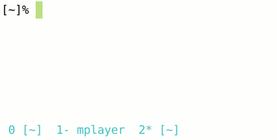

Oh My Zsh 是一款社区驱动的命令行工具，正如它的主页上说的，Oh My Zsh 是一种生活方式。它基于 zsh 命令行的一个扩展工具集，提供了丰富的扩展功能，主题配置，插件机制，已经内置的便捷操作。给我们一种全新的方式使用命令行。
Mac 终端 Terminal.app配合Oh My Zsh可以达到更好的展示效果，更易用
安装步骤参考GitHub中readme文件

将此插件放到oh-my-zsh目录的插件库下：
在~/.zshrc文件末尾加上
source ~/.oh-my-zsh/plugins/incr/incr*.zsh更新配置：
$ source ~/.zshrc 官网，非常好用的一个插件，会记录你之前输入过的所有命令，并且自动匹配你可能想要输入命令，然后按→补全
配合上面的 incr 效果更佳
使用自动补全插件可能会与vim的提示功能相冲突，如会报以下错误：
$ vim t
_arguments:451: _vim_files: function definition file not found解决方法：将~/.zcompdump*删除即可
$ rm -rf ~/.zcompdump*
$ exec zsh功能强大的解压插件，所有类型的文件解压一个命令x全搞定，再也不需要去记tar后面到底是哪几个参数了。
安装：
plugins=(... extract ...)平时使用sublime比较多，该插件可以使用命令行打开sublime。
常用命令如下：
st # 直接打开sublime
st file_a # 用sublime打开文件 file
st dir_a # 用sublime打开目录 dir
stt # 在sublime打开当前目录，相当于 st .安装：
plugins=(... sublime ...)wd 插件是我比较喜欢的一个，它的作用就是能够快速的切换到常用的目录。我们用命令行时经常会遇到这样一种情况，我们常用的目录就那么几个，而这些目录有时候会再很深的层级中。使用 cd 命令在这些深层级目录中切换就比较耗费时间了。
wd 插件正是为了解决这个问题，比如我们有一个常用的目录 /usr/nginx/www/html，我们首先进入到这个目录中，然后输入
wd add web这个命令相当于给当前目录做了一个标识，标识名叫做 web ，我们下次如果再想进入这个目录，只需输入：
wd web这样就可以完成目录切换了，非常方便。
它的原理并不复杂，它维护了一个标识和实际路径的映射表，我们使用wd add 命令可以添加新的映射，可以使用 wd rm 命令删除已有的映射，还可以使用 wd show 命令查看现有的映射。
这个简单的插件解决了一个很实际的问题，推荐使用。 wd 插件的更多内容可以查看它的 github 主页： https://github.com/mfaerevaag/wd
安装：
plugins=(... wd ...)它能让我们在命令行中使用搜索引擎进行搜索。比如 google swift 这个命令就可以使用 Google 搜索 swift 关键字。
web-search 插件在默认情况下没有开启，所以我们需要做一点小工作把它打开。
我们可以使用 google 搜索：
google 你好这样会打开 google 搜索 “swift 学习” 这个关键字。
web-content 同样集成了 baidu, bing 这些搜索引擎：
baidu 你好
bing 你好只需在命令行中输入要搜索的关键字和搜索引擎，就可以进行搜索了，还是很方便的。
安装：
plugins=(... web-search ...)官网，命令太多，有时候记不住，等输入完了才知道命令输错了，这个插件直接在输入过程中就会提示你，当前命令是否正确，错误红色，正确绿色
https://github.com/ohmyzsh/ohmyzsh/wiki/Themes
history 命令查看历史输入命令的时间展示格式
vim ~/.zshrc
# 修改下面配置
HIST_STAMPS="yyyy-mm-dd"时间会按照指定的格式展示，方便搜索查看
[1] github: https://github.com/ohmyzsh/ohmyzsh[2] 官网: https://ohmyz.sh/[3] 软件下载: https://mimosa-pudica.net/zsh-incremental.html[4] 安装: https://github.com/zsh-users/zsh-autosuggestions/blob/master/INSTALL.md#oh-my-zsh[5] 安装: https://github.com/zsh-users/zsh-syntax-highlighting/blob/master/INSTALL.md[6] https://github.com/ohmyzsh/ohmyzsh/wiki/Themes: https://github.com/ohmyzsh/ohmyzsh/wiki/Themes